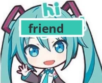
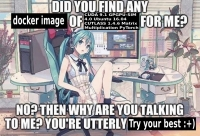
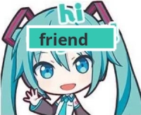
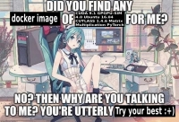

Hatsune Miku: Vocaloid
 

Teto: Vocaloid
Twilight Sparkle: My Little Pony
Nico Robin: One Piece
Miss Goldenweek: One Piece
Tashigi: One Piece
Power: Chainsaw Man
Makima: Chainsaw Man
Columbo: Columbo
Android 18: Dragon Ball
Bulma: Dragon Ball
Patchouli Knowledge: Touhou
Aunn: Touhou
Nazrin: Touhou
Nitori: Touhou
Kaguya: Touhou
Bridget: Guilty Gear
Ramlethal: Guilty Gear
Testament: Guilty Gear
Falin: Dungeon Meshi
Izutsumi: Dungeon Meshi
Thistle: Dungeon Meshi
Michiru: Brand New Animal
Luz Noceda: The Owl House
Amity Blight: The Owl House
Lilith Clawthorne: The Owl House
Detective Girl: Call of the Night
Kurapika: Hunter x Hunter
Entrapta: She-ra and the Princesses of Power
Double Trouble: She-ra and the Princesses of Power
Ema Skye: Ace Attorney
Marcy Wu: Amphibia
Bocchi: Bocchi the Rock
The Blue Guy from Bocchi: Bocchi the Rock
Chihiro: Danganronpa
Silver: Pokemon
Dog Vtuber: The Internet
Wikipe-tan: Wikipedia Mascot
Xenia: Linux Mascot
Miscellaneous